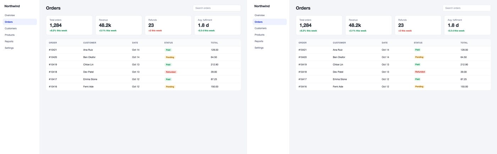
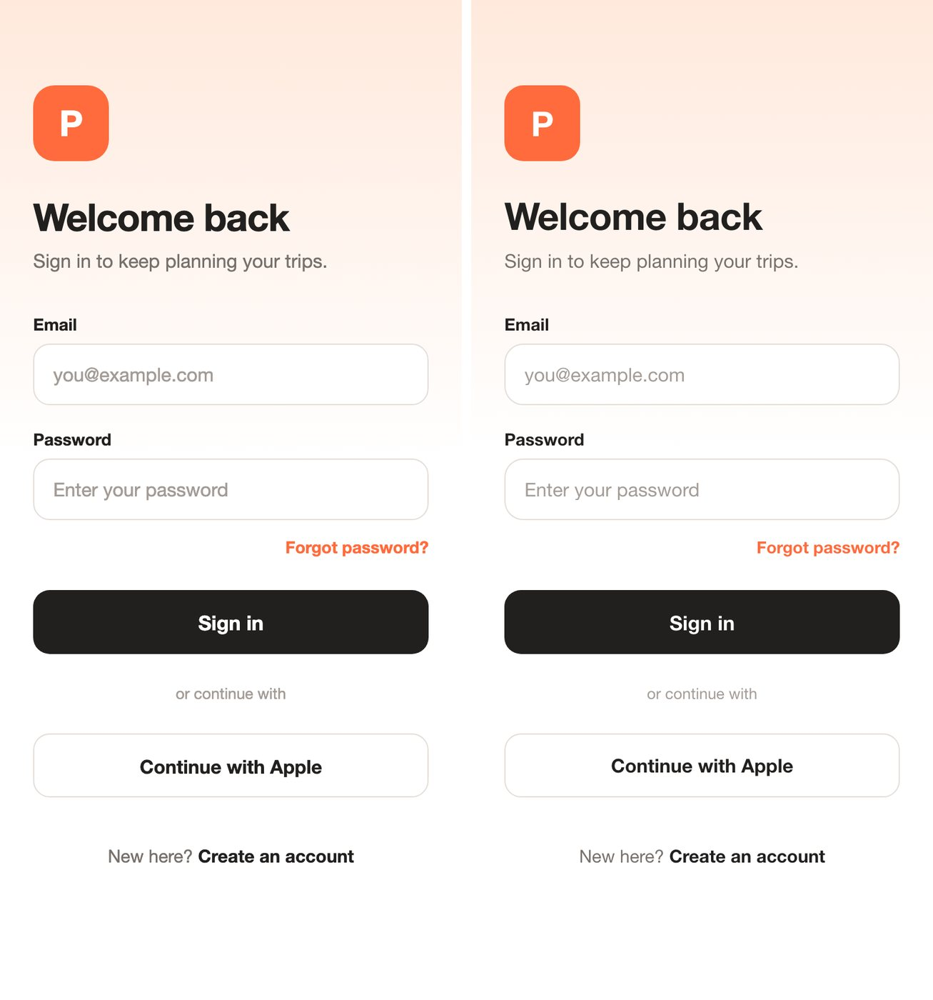

Screenshot to code for Claude Code and Codex, with no API key
shotproof turns a screenshot into matching HTML + CSS (or React + Tailwind) using your agent's own model. It renders the page in Chromium at the screenshot's exact size, scores it against your image with SSIM, and fixes the worst-matching part until the score passes.
- 8 of 8 eval screens pass
- Pass line 0.90 SSIM, set before the evals
- MIT licensed
Install
Claude Code
/plugin marketplace add deserteaglemj/shotproof
/plugin install shotproof@shotproofCodex
codex plugin marketplace add deserteaglemj/shotproof
codex plugin add shotproof@shotproofOne-time helper setup (Python 3):
python3 -m pip install playwright pillow numpy && python3 -m playwright install chromiumThen run /shotproof ./screenshot.png, add react for React + Tailwind, or just say "turn this screenshot into code".
How it works
- Read the screenshot like a builder: sections, exact text, colors sampled from real pixels, type sizes and spacing.
- Build one HTML file with inline CSS (no CDN, no web fonts), or React components with Tailwind in your project.
- Render it in Chromium at the screenshot's own viewport and device scale.
- Compare: SSIM overall and for 8 horizontal bands, band shift in pixels, a side-by-side image and a diff heatmap.
- Fix the worst band with targeted edits, keep the best round, and stop at the pass line or after 5 rounds. Console errors, failed requests, a blank page, a pasted screenshot or sideways scroll at 375px fail the check whatever the score.
Results
Each case was rebuilt by a fresh agent that saw only the screenshot, then re-scored by a separate script. Mean gain from the fix loop: +0.085 SSIM. Full results and per-round logs.


| Case | First build | Final | Pass line | Result |
|---|---|---|---|---|
| Landing page | 0.948 | 0.976 | 0.90 | Pass |
| Pricing (dark) | 0.848 | 0.951 | 0.90 | Pass |
| Dashboard | 0.937 | 0.980 | 0.90 | Pass |
| Mobile login, 2x | 0.824 | 0.983 | 0.90 | Pass |
| Serif article | 0.833 | 0.930 | 0.90 | Pass |
| Hacker News (real site) | 0.780 | 0.865 | 0.80 | Pass |
| GOV.UK, proof mode (real site) | 0.724 | 0.886 | 0.80 | Pass |
| Settings, React + Tailwind | 0.9991 | 0.9996 | 0.90 | Pass |
FAQ
How do I convert a screenshot to HTML with Claude Code?
Install shotproof (/plugin marketplace add deserteaglemj/shotproof, then /plugin install shotproof@shotproof) and run /shotproof ./screenshot.png, or just say "turn this screenshot into code". Claude Code writes one index.html, renders it, scores it against your screenshot and fixes it until it passes.
Is there a screenshot-to-code tool that needs no OpenAI key?
Yes: shotproof runs on the model your Claude Code or Codex session already uses, so it needs no OpenAI, Anthropic or Gemini API key. The render and scoring run locally with Python, Playwright and Chromium.
How is this different from abi/screenshot-to-code?
abi/screenshot-to-code is a standalone web app that needs a provider API key and supports more stacks and video input. shotproof runs inside your agent with no key, and checks its own output with a measured SSIM score and a fixed pass line, fixing the worst band for up to 5 rounds.
Does it work in Codex?
Yes. Run codex plugin marketplace add deserteaglemj/shotproof and codex plugin add shotproof@shotproof; Codex picks up the same skill and helper script.
How do I check the generated page matches the design?
s2c.py verify renders the page at the screenshot's size and writes an SSIM score, a score for each of 8 horizontal bands, a side-by-side image and a red diff heatmap. It passes at 0.90 SSIM (0.80 for real sites) and fails on console errors, failed requests, a blank page, a pasted screenshot or sideways scroll at 375px.
Can it output React + Tailwind?
Yes. Ask for React, or use it in a project that already has React; it writes components into your project and verifies them against your local dev server. One eval case covers this mode (0.9996 SSIM, an easy case because its source also used Tailwind defaults).
Limitations
- The score is grayscale SSIM: it measures visual match, not code quality or accessibility.
- Static frame only: hover, focus, menus and motion are inferred.
- No font identification or asset extraction; it uses a system font of the same style and crops images from the screenshot.
- Small eval set (8 screens) with one React + Tailwind case.
- Needs Python 3 with Playwright, Pillow and numpy, plus Chromium, on your machine.